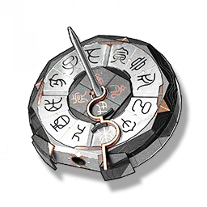

The unlocked Sundial
Missions

The third token given by Jinhsi
The Sundial-style mechanism box that has been cracked, the position and time information on the sundial has been scrambled and reorganized, and I have already obtained the key information passed on by the Jinzhou Magistrate from it.
It now looks like an unremarkable small sundial.
Only by looking closely can you find that there is a tiny light source on the top, and the shadow formed by the sundial needle is dim and unclear, like someone's whisper.